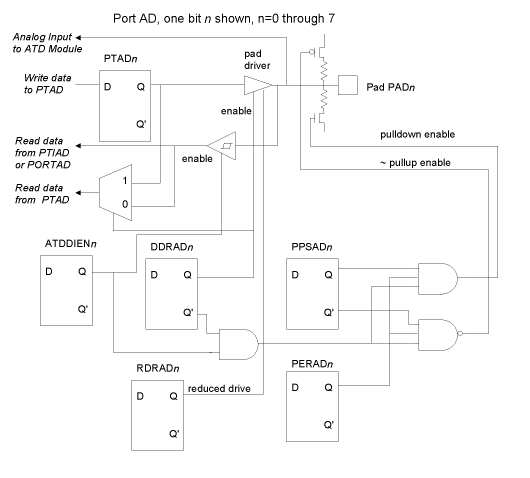

| Previous Appendix | Next Appendix | Index | Search the Text |
The MC9S12C family of 68HCS12 microcontrollers are much smaller (Fewer pins) and lower cost than the MC9S12DP256 discussed throughout this text. The 68HCS12 microcontroller is a modular design which allows Freescale Semiconductor to produce many versions by adding or omitting different modules. While the MC9S12C has fewer modules than the MC9S12DP256, what modules it does have work in the same way which makes it fairly easy to switch among the variations to use what is available or select the minimum cost device which meets the requirements without requiring much, if any, rewriting of code.
Various members of the MC9S12C family differ in the number of package pins (48, 52, or 80), quantity of Flash EEPROM (16kB, 32kB, 64kB, 96kB, or 128kB), quantity of RAM (1kB, 2kB, or 4kB), and presence of a CAN interface. One of the most popular variations is the MC9S12C32 in the 48 pin package, with 32kB of Flash EEPROM, 2kB of RAM, and the CAN interface. This microcontroller is used on (for example) the Wytec DRAGONfly12 and Technology Arts NanoCore12. The DRAGONfly12 and the Elektronik Laden ChipS12 are available with the MC9S12C128 which has 128kB of Flash EEPROM, and probably more important, 4kB of RAM. All of these products consist of the microcontroller, crystal, and some interfacing components mounted on a 40 pin DPI header, making them convenient for inserting into projects.
What's missing? Here's the list of missing modules:
For the details of the architecture, consult the Freescale Semiconductor MC9S12C Family Data Sheet.
The packages with reduced pin count (48 or 52 instead of 80) still have the internal functions, but just are not brought out to the pins. For this reason, the unavailable pins should be configured as inputs with pull-ups enabled to minimize current. Two redundant power pins, VDD2 and VSS2, and the ATD low reference, VRL, are also missing from the reduced pin count packages.
There is no usable external memory bus in the reduced pin count packages because the signals R/*W, *LSTRB, MODA, MODB, and most of ports A and B are not connected to pins. Some other port pins are omitted as described in the next section, but the MODRR register is used to route either PWM or timer module signals to port T to regain some flexability lost by missing port P pins.
Port AD provides 8 multiplexed inputs to the single 10-bit analog to digital converter module. But unlike the DP256 the port can also be used as general purpose digital I/O -- the DP256 only allowed digital input. Since the MC9S12C has far fewer available pins, this allows any or all port AD pins to be used for digital outputs when not being used as an analog to digital converter input pin.
When used for digital input, the ATDDIEN register enables each bit for digital operation. Additionally, Port AD has registers typical of the other general purpose digital I/O ports -- PTAD, PTIAD, DDRAD, RDRAD, PERAD, and PPSAD. When the DDRAD bit is 1, digital output from PTAD is enabled. When the ATDDIEN bit is 1, then digital input is enabled from PORTAD and PTIAD. When the ATDDIEN bit is 0, these bits will read as 1.
No matter what the port AD settings, the analog to digital converter input remains connected and will measure the voltage at the pin. Pullup and pulldown is only available when ATDDIEN bit is 1.
While these ports are fully brought out to pins in the 80 pin package, most are not brought out in the reduced pinout packages, and in these packages it is not possible to use these ports for external memory.
In the reduced pinout packages, only the port E pins for *XIRQ (pin 0), *IRQ (pin 1), ECLK (pin 4), and *XCLKS (pin 7) are available. This allows access to the two general external interrupts, the clock, and the configuration input as to whether there is an external clock source or crystal.
Ports A and B are are only available on a few pins. In the 48 pin package, only PA0 and PB4 are on pins. The 52 pin package also brings out PA1 and PA2.
The MC9S12C contains the timer module described in this text (without the enhancements which aren't described in the text) and 6 PWM channels, 0 through 5. In the 80 pin package, all timer and PWM functions can be accessed and used simultaneously. However the 48 pin package has all the port T pins (timer) but only the pin for bit 5 on port P (PWM). The 52 pin package adds pins 3 and 4. Note that the 80 pin package has a full 8 pins for port P even though there are only PWM channels for pins 0 through 5.
To use the PWM channels in the reduced pinout packages, there is a multiplexer so that either the timer or PWM channels can be selected for pins 0 through 4 on port T. The MODRR register is used for the selection, with bits 0 through 4 selecting the source for pins 0 through 4. A 1 bit selects the PWM channel. The register is initialized to 0.
Port S is four bits wide (bits 0 through 3) and port M is 6 bits wide (bits 0 through 5), with the remaining bit positions not implmemented.
These ports are traditionally for bus interface modules. In the MC9S12C, port S has the single SCI module on pins 0 (RXD) and 1 (TXD), while port M has the single SPI on pins 2 (MISO), 3 (*SS), 4 (MOSI), 5 (SCK). The versions with the CAN interface use pin 0 (RXCAN) and pin 1 (TXCAN).
On the reduced pin count packages,these signals are the only ones brought out to pins. In the 80 pin package, PS2 and PS3 are also brought out.
Port J supports the key interrupt function, but is only two bits wide (bits 6 and 7), and only brought out to pins in the 80 pin package.
The following flash memory resources are provided:
| Version | Flash Size | Flash Pages | Page Window | Pages at
addresses $0000-$7FFF |
|---|---|---|---|---|
| GC16 | 16k | $3F | $3F when PPAGE odd | None |
| C32, GC32 | 32k | $3E, $3F | $3E (PPAGE even) $3F (PPAGE odd) |
$3E at $4000-$7FFF |
| C64, GC64 | 64k | $3C - $3F | $3C + (PPAGE modulo 4) | $3D - $3E |
| C64, GC64 | 64k | $3C - $3F | $3C + (PPAGE modulo 4) | $3D - $3E |
| C96, GC96 | 96k | $3A - $3F | $30 + (PPAGE modulo 8) | $3D - $3E |
| C128, GC128 | 128k | $38 - $3F | $30 + (PPAGE modulo 8) | $3D - $3E |
Only the least significant bits of PPAGE are used to determine which page appears in the windows at $8000-$BFFF. With PPAGE defaulting to 0, that provides a very convenient default in the C32 version of having the upper 32k of address space be the full 32k bytes of flash EEPROM.
The ROMON and ROMHM bits determine if the pages at addresses $0000 through $7FFF will be visible on versions which support this. Note that having flash memory visable at locations $0000-$3FFF was not possible with the DP256 part, however that part usually has device registers, EEPROM and RAM filling that range.
The D-Bug12 program is not available for this family because of the small amount of memory available. But there are alternatives. First, like the other HCS12 families, the BDM interface is available, but even without the expense of a BDM pod development of MC9S12C based systems can still be performed using the SCI interface and a 2K byte monitor program developed by Freescale Semiconductor.
This monitor program supports loading of the Flash memory (except for the monitor program itself). The monitor attempts to be invisible to applications by relocating any interrupt vectors to another area in the flash memory, and then re-vectoring the actual interrupts as the occur (just like D-Bug12 does). The application only sees additional interrupt latency.
For debugging, the monitor supports a variation of the BDM interface command set to allow reading/writing of memory and CPU registers, and to issue GO, HALT, and single instruction trace commands. Breakpoints are not supported.
Typically, the system will use one of the port pins to implement a run/load switch. When in the run position, the application program will start immediately, but in the load position the monitor program will start instead. The monitor program uses the SCI interface exclusively -- to develop applications which use the SCI port a BDM debugger should be used.
Return to the Index.